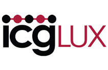

Position: Data Science Intern
Dates Employed: January 2017 - June 2019
Description:
ICG Solutions is a software development company, whose main product is a real time data analytics software. The software uses "rules" written by the user in order to find and analyze data in real time, without the need to store any large amounts of data. The company is still small and because of this, my tasks varied greatly depending on what needed doing when. However, in all the tasks I worked in a team of about three people in order to solve problems or test the software.
Tasks:
- Ad hoc testing of the software using JIRA
- Assist in transferring software across servers
- Complete full installation of the software through command line
- Assist with the creation of a Twitter scraping tool written in python